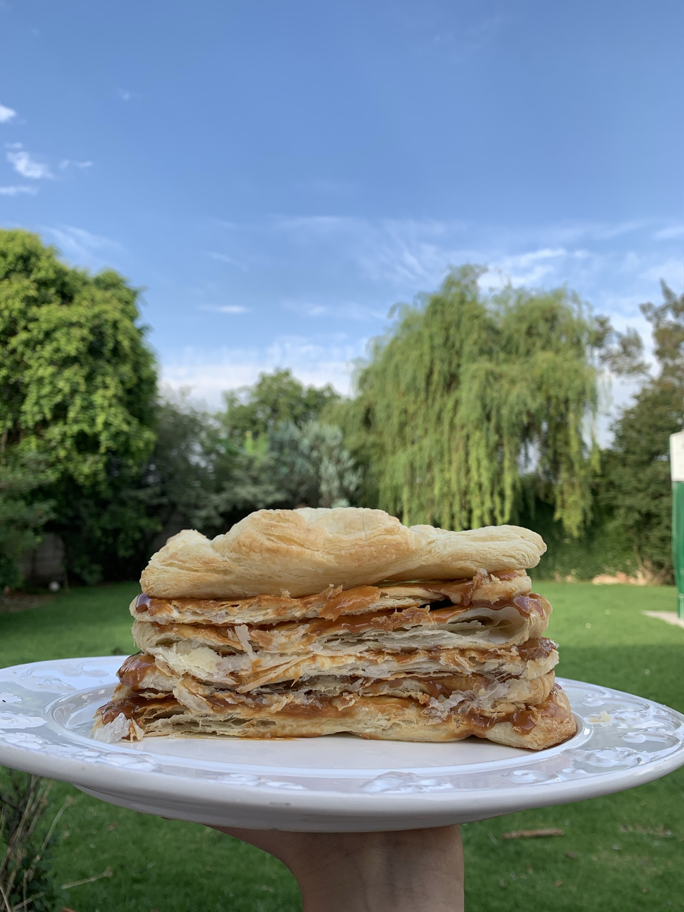

Buttery Flaky Crust
I found this recipe in an old recipe book at home and then realized how
similar it is to Sally’s All-Butter Pie Crust. If you enjoy the taste of
butter in a crust, this one is perfect. If you follow the folds, it is
flaky too. This dough works for both savory and sweet dishes, making it
an even better recipe.
Ingredients
- 300 grams of all-purpose flour
- 200 grams of cold unsalted butter
- 125 cubic centimeters of cold water (like ice-cold)
- Salt
Procedure
-
Cut the cold butter into small cubes and add them to the flour and
salt. Use your fingers to rub the butter into the flour until the
mixture resembles coarse crumbs (it’s a crumbly, sandy-like mixture).
You can also do this with a stand mixer’s paddle attachment.
- Add the cold water until you form a dough.
-
Roll the dough on a floured surface. Fold it in 3, roll it, fold it in
3 again, and roll again. Repeat this as long as you can. Also, if you
let the dough chill in between rolls and folds, it can be even
flakier.
-
Chill the dough in the fridge covered in plastic wrap before using it
for at least 30 minutes. It’ll also last in the fridge for 5 days or
so.
- Bake at high heat, +400°F.